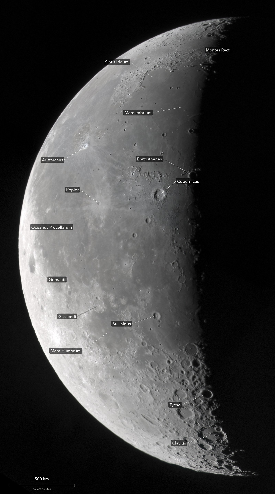

The Moon at last quarter
4 October 2026 · 41 percent lit
Along the line between day and night the Sun is setting, so every crater rim and mountain throws a long shadow. That is why the detail is richest there.
What you are looking at

Swipe sideways to see the rest. Tap the picture for full size.
- Distance
- 365,000 km, measured from its size in this picture
- Across
- 3,475 km
- Light took
- 1.2 seconds
- For scale
- Copernicus is 93 km wide; Clavius, 231 km
For photographers
Lucky imaging over a 2 x 2 mosaic in morning twilight, with cloud about.
- Exposures
- 1/60 s at ISO 100
- Frames
- 78 taken over five aims in two passes, 39 kept. 17 saw only the night side; the rest were lost to cloud
- Lucky imaging
- Frames registered on the lunar surface itself (12,000 matched features, 0.8 px). In each patch only the sharpest 30 percent of the clear frames are averaged
- Restoration
- Blur measured at the limb: 1.8 arcsec. Wiener and Richardson-Lucy with the gain capped at 3 x and held at the limb. No ringing found at limb, cusps or terminator
- Sampling
- 0.388 arcsec per pixel, the sensor's own: 0.7 km per pixel on the Moon
- Field
- Disc 32.7 arcmin across, taller than one 38.8 x 25.9 frame: a 2 x 2 mosaic and a centre frame. One panel saw only the night side
- When
- 4 October 2026, in morning twilight, over half an hour. 62 to 70 degrees up
- Calibration
- Flat from 7 twilight-sky frames: corners at 74 percent of the centre, 340 dust shadows divided out. Cloud glow fitted and subtracted per frame
- Orientation
- Lunar north up, from 17 craters of known position (32.2 degrees from the sensor's way up)
- Telescope
- Celestron 8SE Schmidt-Cassegrain with dew shield: 203 mm aperture, 2,084 mm focal length (measured by plate solve), f/10.3
- Camera
- Sony a6000, stock, at prime focus: APS-C 23.5 x 15.6 mm, 6000 x 4000, 3.9 micron pixels, RAW
- Mount
- Sky-Watcher EQ6-R, unguided. Set down 27 degrees off the pole; both axes driven from a pointing model fitted to plate solves. Residual drift about 0.1 arcsec per second
© 2026 Brad Gessler · Celestron 8SE (8 inch, 2,080 mm) and Sony a6000 on an EQ6-R · San Francisco Bay Area · 4 October 2026
Capture and mount: Observatory (Elixir on a Raspberry Pi 3). Stacking: numpy, OpenCV, rawpy. Plate solving: astrometry.net. Stacked from the camera's RAW frames. Nothing generated.
© 2026 Brad Gessler. The pictures and the words are his own; all rights reserved.